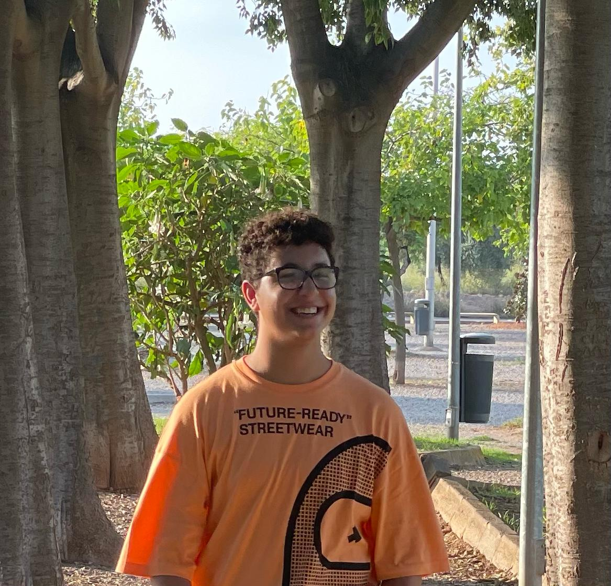

Nacido en el 2005. Me interesa principalmente la programación y la ciberseguridad. En un futuro me gustaría trabajar en el CNI. Actualmente estoy estudiando 2º de DAW en el IES El Caminás, donde también realicé el grado medio de SMR, junto con otros estudios.
Anteriormente estuve trabajando en el campo de la informática. Tras acabar el grado medio estuve realizando prácticas en Pixelcom, donde estuve preparando sistemas para clientes, desde ordenadores de sobremesa hasta servidores, también hice parte de programación donde debugueaba o solucionaba errores de las aplicaciones, además de dar soporte a los clientes.
Además de la programación o ciberseguridad, también me interesa el deporte, voy al gimnasio, salgo a correr y a veces practico natación. También me gustan las motos, los coches y leer.
Si quieres ponerte en contacto conmigo, contáctame por correo electrónico, mediante una llamada o un mensaje a WhatsApp.
Más sobre mi ➟